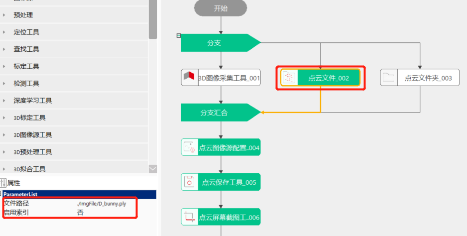
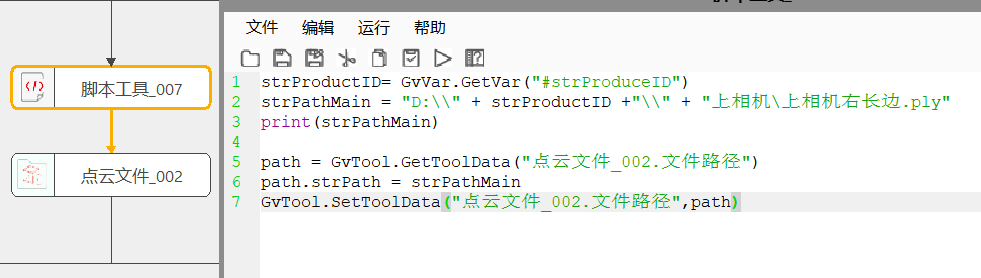

点云文件主要是加载文件夹中点云格式的图像。
在3D测量及检测项目中，经常涉及将离线的点云图像加载进来复测，因此需要加载点云图像的功能。


无
| 参数名称 | 参数描述 |
|---|---|
| 文件路径 | 文件加载的路径，目前支持ply和txt格式，此路径可以在脚本中动态修改 |
| 启用索引 | 是：需要设置“索引文件路径”，输出栏中显示加载的有效点索引；否：不加载点云图像有效索引 |
| 索引文件路径 | 索引文件加载的路径，文件名称后缀为index |
| 参数名称 | 参数描述 |
|---|---|
| 点云图像 | 加载的点云图像 |
| 参数名称 | 参数描述 |
|---|---|
| 点云图像 | 加载的点云图像 |
| 有效点索引 | 输出加载的点云索引 |
| 执行结果 | 工具执行结果 |
| 执行时间 | 工具执行时间 |
参见“\Samples\3D\点云\点云图像源配置工具.gvp”。